The 36 Tattvas — Plate Contact Sheet
56 constructed-geometry plates · one shared system: ground #f7f3e8, ink #221f1a, gold #9a7322, stroke 1.6px on a 400×400 grid
The Five Śaktis (5)
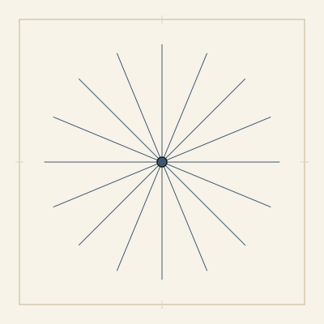
Cit Shakti — The Power of Awarenessshakti-cit
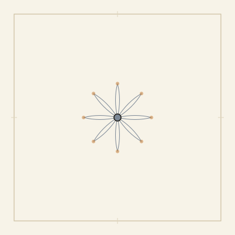
Ānanda Shakti — The Power of Blissshakti-ananda
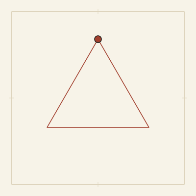
Icchā Shakti — The Power of Willshakti-iccha
Jñāna Shakti — The Power of Knowingshakti-jnana
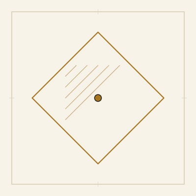
Kriyā Shakti — The Power of Actionshakti-kriya
The Five Pure Tattvas (5)
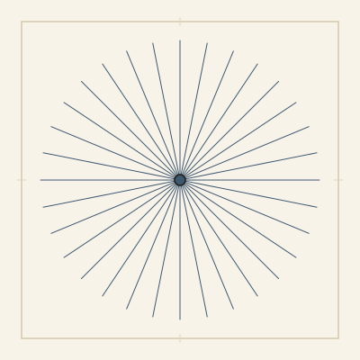
Shiva Tattva — Pure Awarenesstattva-01
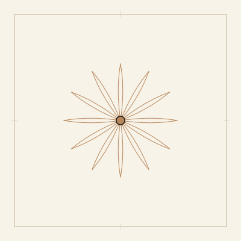
Shakti Tattva — The Bliss of Existencetattva-02
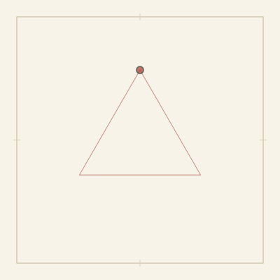
Sadāshiva Tattva — The Arising of Willtattva-03
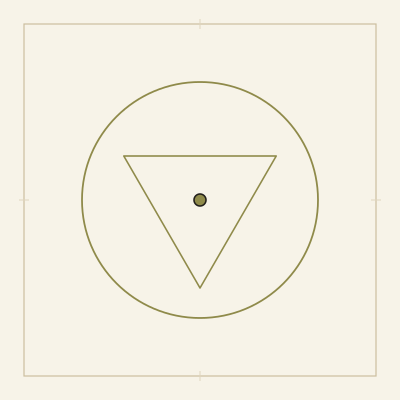
Īshvara Tattva — The Clarity of Knowingtattva-04
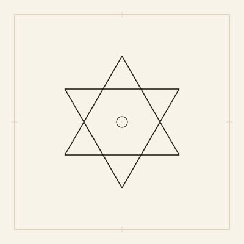
Shuddha Vidyā — Pure Knowledge in Actiontattva-05
The Seven Kañcukas (Coverings) (7)
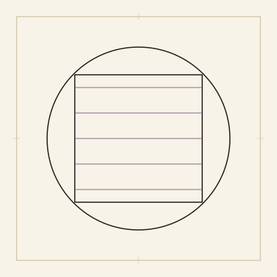
Māyā — The Great Forgettingtattva-06
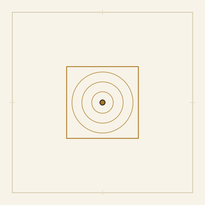
Kalā — Limited Agencytattva-07
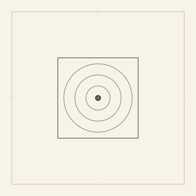
Vidyā — Limited Knowledgetattva-08
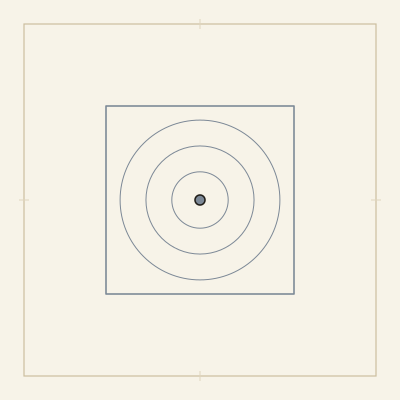
Rāga — Attachmenttattva-09
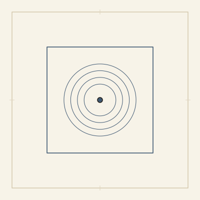
Kāla — Timetattva-10
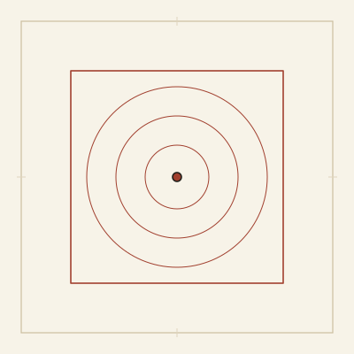
Niyati — Causalitytattva-11
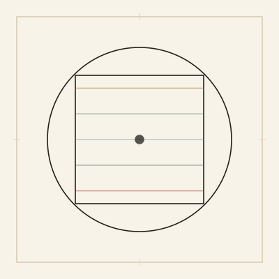
Purusha — The Limited Selftattva-12
Prakṛti — The Pivot (1)
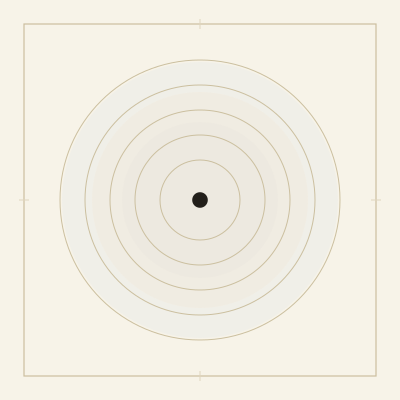
Prakriti — Primordial Naturetattva-13
The Inner Instrument (3)
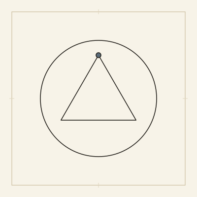
Buddhi — Discernmenttattva-14
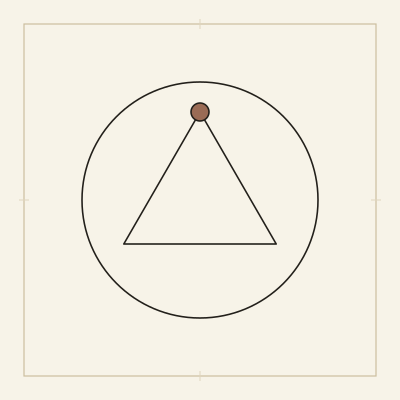
Ahamkāra — The I-Makertattva-15
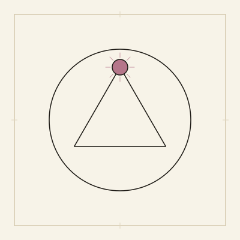
Manas — Conceptual Mindtattva-16
The Five Perception Senses (Jñānendriyas) (5)
Shrotra — Hearingtattva-17
Tvak — Touchtattva-18
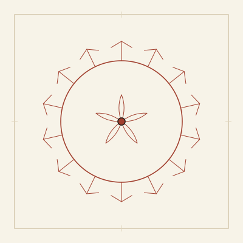
Chakshu — Sighttattva-19
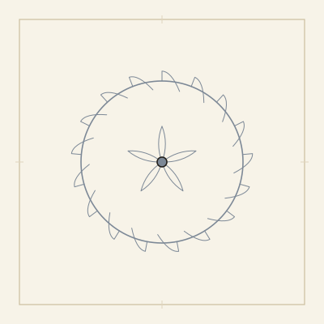
Rasanā — Tastetattva-20
Ghrāna — Smelltattva-21
The Five Action Senses (Karmendriyas) (5)
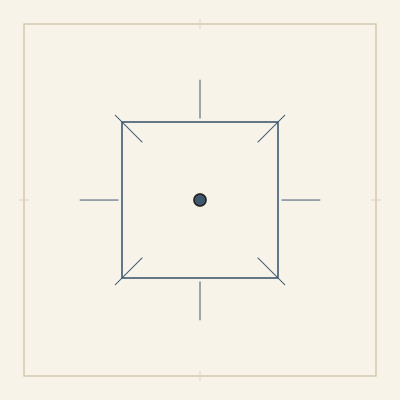
Vāk — Speechtattva-22
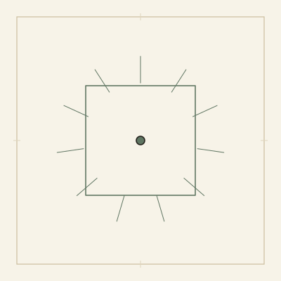
Pāni — Graspingtattva-23
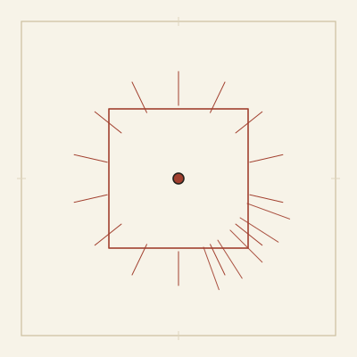
Pāda — Locomotiontattva-24
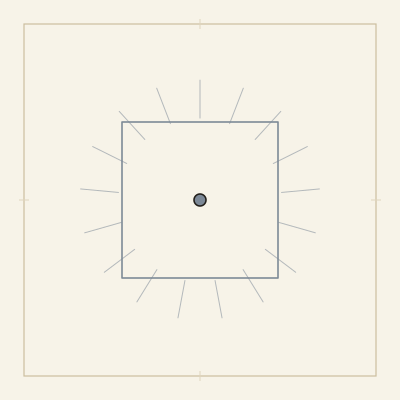
Pāyu — Eliminationtattva-25
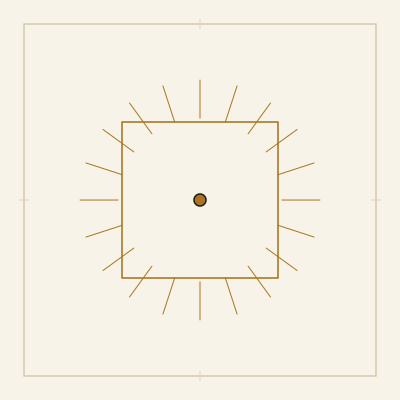
Upastha — Procreationtattva-26
The Five Tanmātras (Subtle Elements) (5)
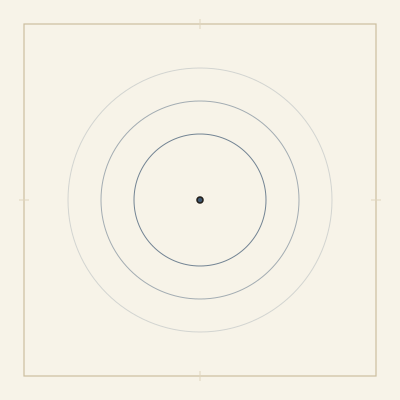
Shabda Tanmātra — Subtle Soundtattva-27
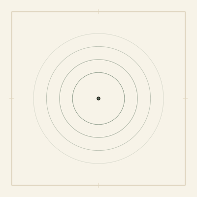
Sparsha Tanmātra — Subtle Touchtattva-28
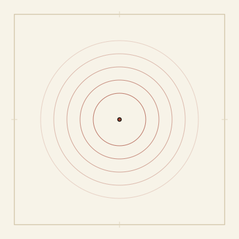
Rūpa Tanmātra — Subtle Formtattva-29
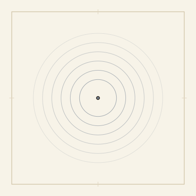
Rasa Tanmātra — Subtle Flavortattva-30
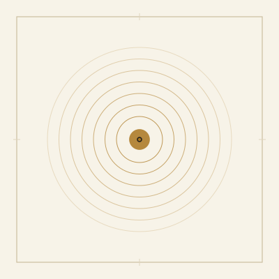
Gandha Tanmātra — Subtle Scenttattva-31
The Five Gross Elements (Mahābhūtas) (5)
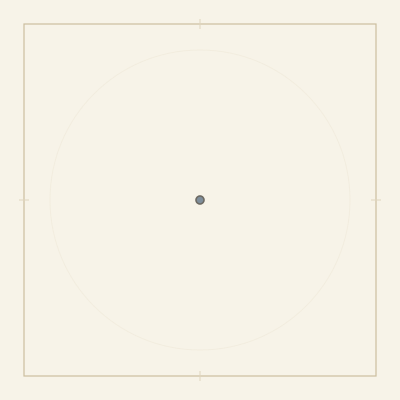
Ākāsha — Spacetattva-32
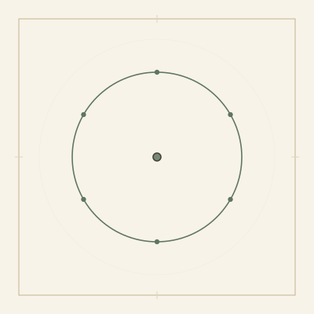
Vāyu — Airtattva-33
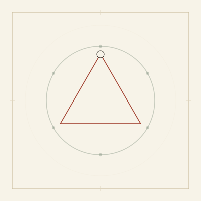
Tejas — Firetattva-34
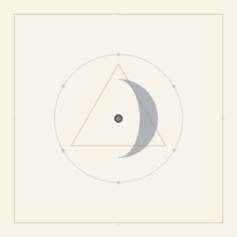
Jala — Watertattva-35
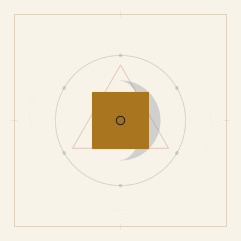
Prithvī — Earthtattva-36
The Five Realms (5)
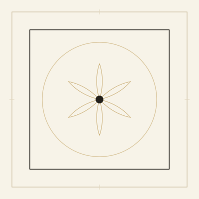
Shuddhādhvan — The Pure Universerealm-pure
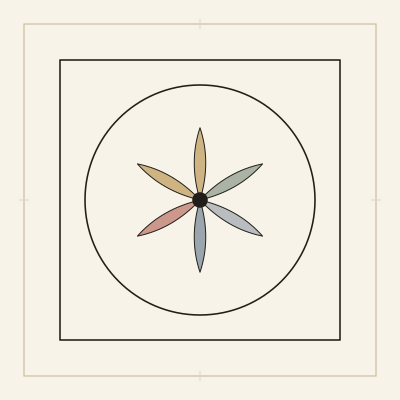
The Kañcukas — Garments of Forgettingrealm-coverings
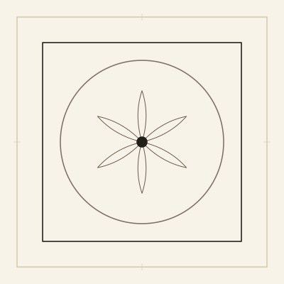
Antaḥkaraṇa — The Inner Instrumentrealm-psyche
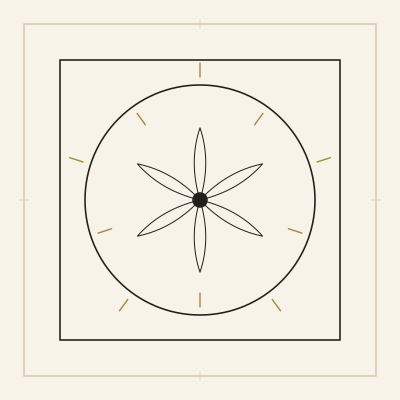
The Ten Sense Powersrealm-senses
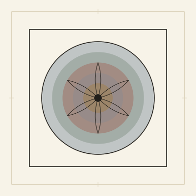
Pañca Mahābhūta — The Great Elementsrealm-elements
Concepts (10)
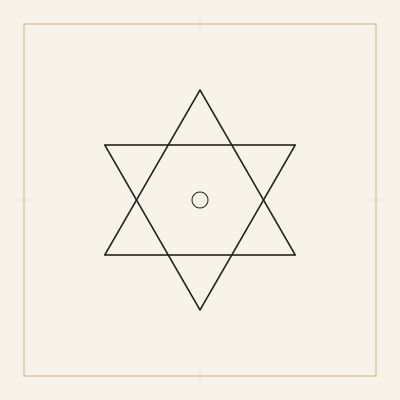
Shiva-Shakti-Nara — The Sacred Trinityconcept-trinity
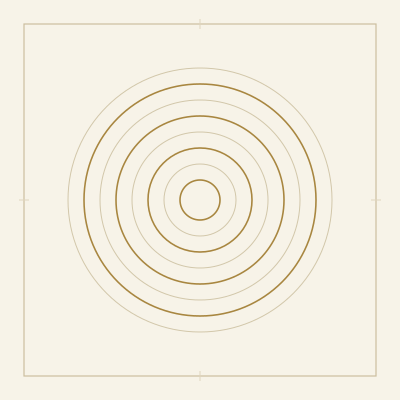
Spanda — The Divine Pulsationconcept-spanda
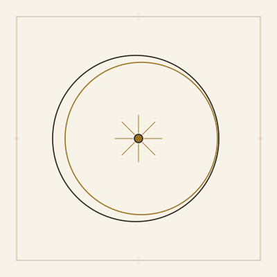
Pratyabhijñā — Recognitionconcept-pratyabhijna
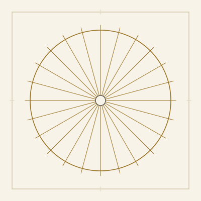
Svātantrya — Absolute Freedomconcept-svatantrya
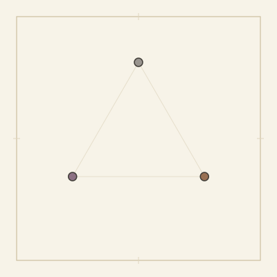
The Three Malas — Impurities of Forgettingconcept-three-malas
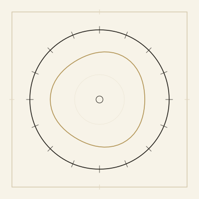
The Three Upāyas — Means of Practiceconcept-three-upayas
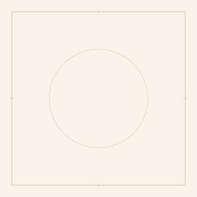
Anupāya — No-Means, Beyond Techniqueconcept-anupaya
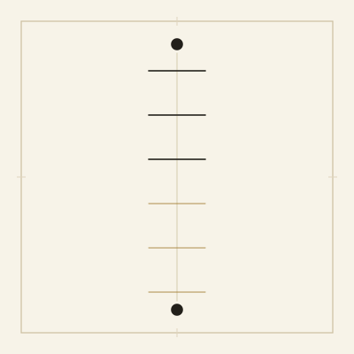
Ṣaḍadhvan — The Six Pathsconcept-shadadhvan
Why Thirty-Six, Not Twenty-Fiveconcept-samkhya-comparison
The Qualities That Accumulate — Why Earth Holds All Fiveconcept-tanmatra-accumulation